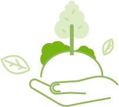

-
한국환경보전원 모든 임직원은
고객이 만족할 수 있는 최상의 서비스를 제공하기 위하여 다음과 같이 실천할 것을 약속 드립니다. - 
하나.우리는 고객을 최우선으로 생각하며 고객의 기대에 부응하는 서비스를 제공하기 위하여 최선을 다하겠습니다.
하나.우리는 고객의 작은 소리에도 귀 기울여 고객이 원하는 서비스를 제공하도록 노력하겠습니다.
하나.우리는 공정한 자세로 모든 고객에게 최선을 다하여 어떠한 고객도 차별하지 않도록 하겠습니다.
하나.우리는 잘못된 서비스로 인한 고객의 불편사항을 신속하게 조치하고 개선하겠습니다.
하나.우리는 정기적으로 고객의 평가를 받고 이를 경영방침에 적극적으로 반영하겠습니다.